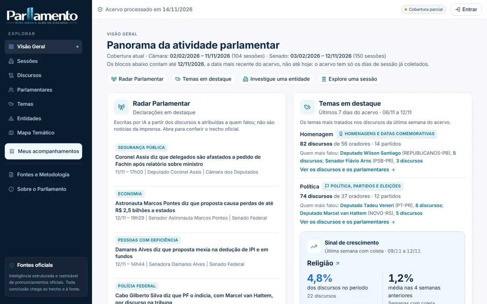
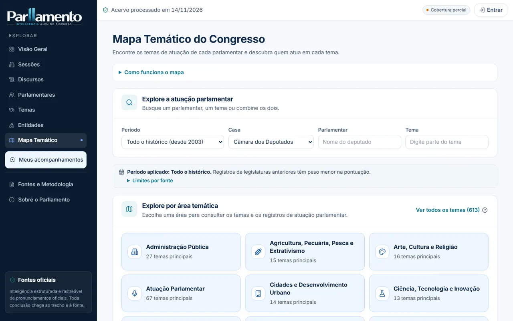
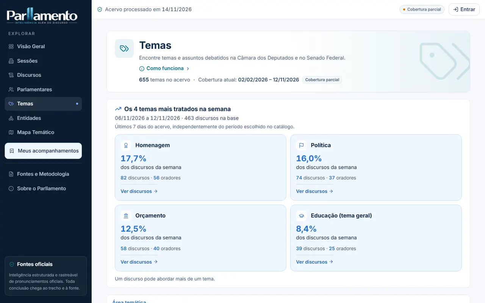

A WZ Cortex transforma grandes volumes de informação pública em análise organizada, rastreável e comparável, para quem precisa decidir com base em evidência.
“Não podemos votar esta matéria sem ouvir os municípios. O texto retira recursos da atenção básica e transfere a conta para quem menos pode pagar. Vou apresentar emenda para corrigir esse ponto.”
Exemplo ilustrativo de como uma fala vira análise com trecho de origem.
Inteligência além do discurso.
Nosso principal produto. O Parllamento transforma a atividade parlamentar publicada em fontes oficiais em informação organizada, rastreável e comparável.
Ler discurso parlamentar em volume é lento, e o essencial fica disperso no texto: posições, compromissos, entidades citadas, temas. O Parllamento organiza cada pronunciamento em blocos de análise e liga cada conclusão ao trecho que a sustenta.
Assim dá para acompanhar a atuação por parlamentar, tema e entidade sem perder de vista de onde veio cada informação.
Versão em validação, aberta para consulta.



Telas do Parllamento, capturadas em novembro de 2026.
Somos uma empresa de tecnologia especializada em inteligência analítica. Construímos e operamos os nossos próprios produtos e aplicamos o mesmo método em projetos de clientes.
Operação de plataformas próprias, com produção e distribuição de informação especializada por assinatura.
Processamento, tratamento e análise de grandes volumes de dados, do documento bruto ao indicador comparável.
Licenciamento de softwares, sistemas de inteligência artificial e soluções de automação desenvolvidos pela nossa equipe.
Consultoria técnica em tecnologia da informação e em análise de dados, com pesquisa e inovação tecnológica contínuas.
É o princípio que orienta tudo o que publicamos e entregamos.
Cada afirmação aponta para o trecho e para o documento oficial de onde saiu.
Separamos o que a fonte diz do que a análise conclui. O que alguém declarou é a fala dessa pessoa, não um fato verificado por nós.
Dizemos o período coberto, o que ficou de fora e onde uma análise automática pode errar.
Para conhecer o Parllamento, propor uma parceria ou discutir um projeto de análise, escreva para a nossa equipe.